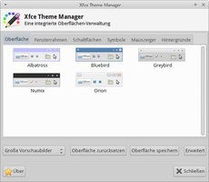

Xfce Theme Manager
Dieser Artikel wurde für die folgenden Ubuntu-Versionen getestet:
Ubuntu 16.04 Xenial Xerus
Ubuntu 14.04 Trusty Tahr
Zum Verständnis dieses Artikels sind folgende Seiten hilfreich:
Nutzer von Xfce bzw. Xubuntu haben sich evtl. schon gewundert, warum die Einstellungen zur optischen Gestaltung der Oberfläche im Einstellungsmanager über verschiedene Fenster konfiguriert werden müssen: "Erscheinungsbild" (Fensterinhalt, Symbole, Schriftart), "Fensterverwaltung" (Fensterrahmen), "Schreibtisch" (Hintergrundbild) und "Maus und Touchpad" (Mauszeiger). Eine wirkliche Erklärung gibt es nicht – diese Trennung ist historisch bedingt.
Der Xfce Theme Manager fasst die verschiedenen Einstellungsdialoge zusammen und ergänzt so die bei Xfce vorhandenen Möglichkeiten. Insbesondere (Ex-)Nutzern von GNOME 2 und MATE wird der Theme-Manager sehr vertraut vorkommen.
Installation¶
 Das Programm ist nicht in den offiziellen Paketquellen enthalten. Zur Installation muss man daher auf ein "Personal Package Archiv" (PPA) [1] ausweichen.
Das Programm ist nicht in den offiziellen Paketquellen enthalten. Zur Installation muss man daher auf ein "Personal Package Archiv" (PPA) [1] ausweichen.
PPA¶
In diesem PPA sind einige weitere Programme rund um Xfce enthalten. Um Problemen mit den offiziellen Paketquellen vorzubeugen, wird empfohlen, das PPA nach der Installation wieder zu deaktivieren oder Apt-Pinning zu nutzen.
Adresszeile zum Hinzufügen des PPAs:
ppa:rebuntu16/other-stuff
Hinweis!
Zusätzliche Fremdquellen können das System gefährden.
Ein PPA unterstützt nicht zwangsläufig alle Ubuntu-Versionen. Weitere Informationen sind der  PPA-Beschreibung des Eigentümers/Teams rebuntu16 zu entnehmen.
PPA-Beschreibung des Eigentümers/Teams rebuntu16 zu entnehmen.
Damit Pakete aus dem PPA genutzt werden können, müssen die Paketquellen neu eingelesen werden.
Nach dem Aktualisieren der Paketquellen kann das folgende Paket installiert werden [2]:
xfce-theme-manager (ppa)
 mit apturl
mit apturl
Paketliste zum Kopieren:
sudo apt-get install xfce-theme-manager
sudo aptitude install xfce-theme-manager
Fremdpaket¶
Wer davor zurück scheut, wegen eines einzelnes Pakets gleich ein komplettes PPA einzubinden (und anschließend wieder zu entfernen), kann sich auch ein einzelnes Fremdpaket  herunterladen und manuell [3] installieren. Der Paketname lautet: xfce-theme-manager_VERSION~ppa+UBUNTUVERSION0_ARCHITEKTUR.deb. Nachteilig ist, dass man sich um Aktualisierungen nun selbst kümmern muss.
herunterladen und manuell [3] installieren. Der Paketname lautet: xfce-theme-manager_VERSION~ppa+UBUNTUVERSION0_ARCHITEKTUR.deb. Nachteilig ist, dass man sich um Aktualisierungen nun selbst kümmern muss.
Hinweis!
Fremdpakete können das System gefährden.
Verwendung¶
Bei Xubuntu erfolgt der Start über den Einstellungsmanager und den Eintrag "Persönlich -> Xfce-Theme-Manager".
|  |
| Oberfläche |
| Fensterrahmen |
| Schaltflächen |
| Symbole |
| Mauszeiger |
 |
| Hintergrund |
Neben der Möglichkeit, eigene Kombinationen mit "Oberfläche speichern" zu sichern, bietet die Schaltfläche "Erweitert" gebündelt Zugriff auf Einstellungen, die bei Xfce über diverse Einstellungsdialoge verstreut sind. Vom gleichen Programmautor stammt beispielsweise der Xfce4-Composite-Editor  , der eine alternative Oberfläche zur Konfiguration der Desktop-Effekte darstellt. Dieses Programm kann aus dem gleichen PPA wie oben angegeben nachinstalliert werden.
, der eine alternative Oberfläche zur Konfiguration der Desktop-Effekte darstellt. Dieses Programm kann aus dem gleichen PPA wie oben angegeben nachinstalliert werden.
Links¶
Xfce Theme Manager: A Single GUI To Change Any Xfce Theme (With Previews)
- Blogbeitrag, 06/2013Xfce
 Übersichtsartikel
Übersichtsartikel
- Erstellt mit Inyoka
-
 2004 – 2017 ubuntuusers.de • Einige Rechte vorbehalten
2004 – 2017 ubuntuusers.de • Einige Rechte vorbehalten
Lizenz • Kontakt • Datenschutz • Impressum • Serverstatus -
Serverhousing gespendet von